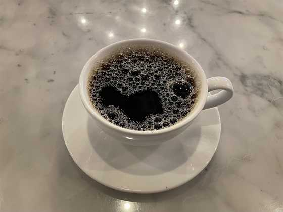
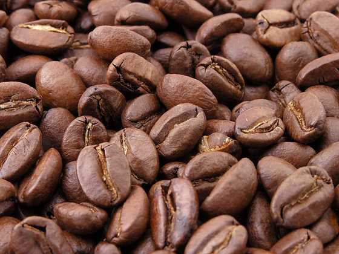
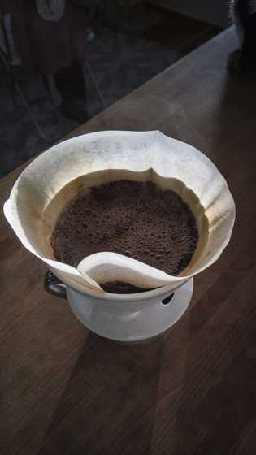
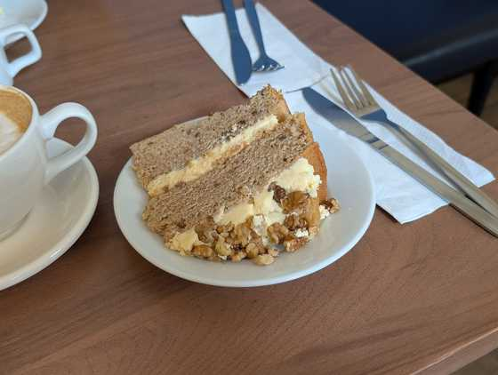

三重県津市安濃町・古民家の自家焙煎珈琲
古い家のぬくもりで、
一杯の珈琲をゆっくりと。
ポールスター珈琲は、古民家を使った喫茶店です。自家焙煎のコーヒーと、甘いものや軽食でひと息つける場所です。
お店のこと
古民家で、自家焙煎の一杯を。

Instagramのプロフィールによると、ポールスター珈琲は三重県津市安濃町にある古民家喫茶で、自家焙煎のコーヒーを出しています。コーヒー豆はオンラインショップでも販売しているとのことです。
店名の意味や開店のいきさつは、確認できた範囲では公開されていません。このページでは古民家と自家焙煎という確認できた特徴を軸に、ゆっくり過ごせる雰囲気を制作側のイメージとして表現しています。






写真は雰囲気を伝えるフリー素材です。お店の実際の様子・提供品ではありません。
メニュー
珈琲と、甘いもの、軽食。
Instagramで紹介されているのは、自家焙煎コーヒー、カラメルプリン、クロックムッシュなどです。詳しい内容・価格は準備中です。

自家焙煎コーヒー
価格: 準備中

甘いもの(カラメルプリンなど)
写真はイメージです。価格: 準備中
軽食(クロックムッシュなど)
写真はイメージです。価格: 準備中
ドリンクいろいろ
詳細: 準備中
ゆっくり過ごす時間のイメージ


口コミ
こんな声が似合うお店です
イメージ例
古い家の静けさのなかで飲む珈琲が、いつもより美味しく感じました。
イメージ例
席でゆっくり本が読めて、つい長居してしまいました。
イメージ例
豆を買って帰り、家でも同じ香りを楽しんでいます。
上の口コミは制作側が作った例文で、実在のお客様の声ではありません。
アクセス
ご案内
| 所在地 | 〒514-2305 三重県津市安濃町清水756-106 |
|---|---|
| 電話 | 準備中 |
| 営業時間 | 準備中 |
| 定休日 | 準備中 |
| SNS | Instagram @polestarcoffee |
営業時間・定休日は変更されることがあるため、最新情報はInstagramをご確認ください。